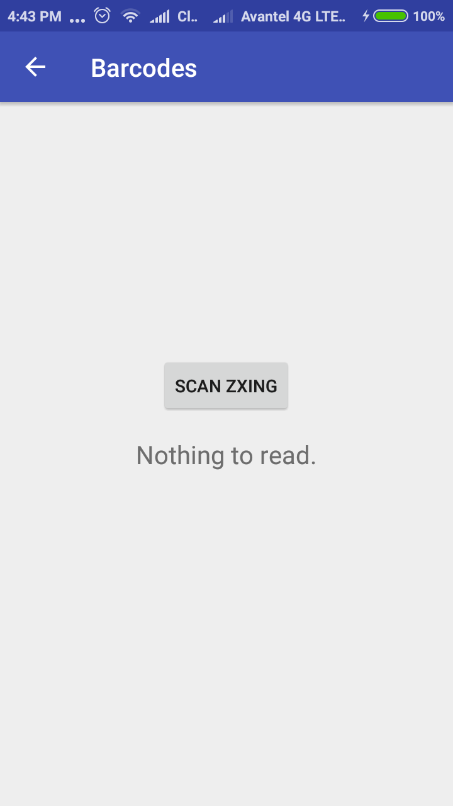
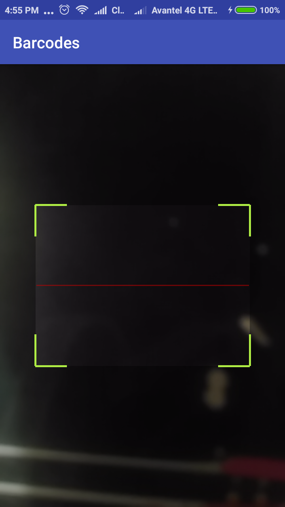
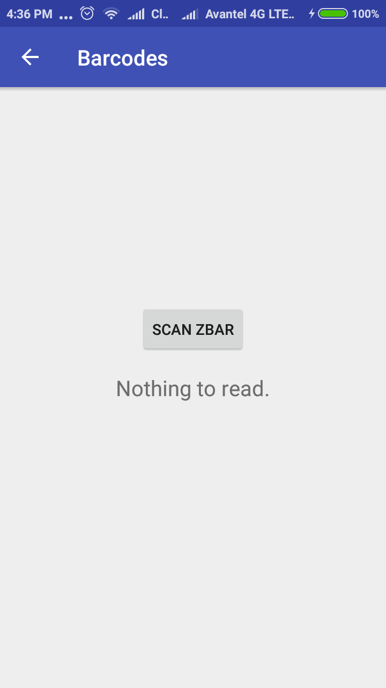
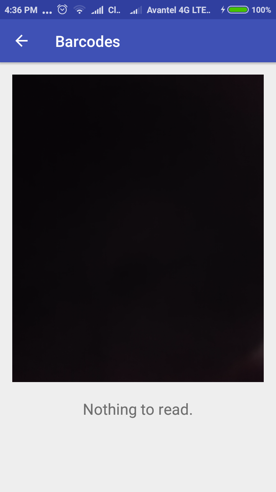

Códigos de barras


Es un código basado en la representación de un conjunto de líneas paralelas de distinto grosor y espaciado que en su conjunto contienen una determinada información que pueden ser leídos por una máquina.
Generalmente describe información del producto que tiene el código.

Patente original. Tomado de https://www.google.com/patents/US2612994
UPC-A
Consta de 12 digitos numéricos asignados exclusivamente a cada artículo comercial
Hay una correspondencia uno a uno entre los digitos y las líneas y espacios
UPC-E

Tiene 6 digitos
Es una versión de UPC con omisión de ceros (0)
Permite el uso de UPC en paquetes pequeños
EAN-13

Tiene 13 digitos
Utilizado en el comercio global
Permite identificar un tipo específico de producto en una configuración específica de paquete de un fabricante específico
EAN-8

Se deriva de EAN-13
Se introdujo para su uso en pequeños paquetes
Azteca

Inventado en 1995 y publicado por AIM Inc. en 1997
Fue nombrado así por su similitud con una pirámide azteca
Matriz de datos

Consiste en celdas blancas y negras organizadas en un patrón cuadrado o rectangular
El tamaño habitual de los datos es de uno pocos bytes hasta 1556 bytes
La longitud de los datos codificados depende del número de celdas en la matriz
Código QR

Diseñado inicialmente para la industria automotriz japonesa
Se hizo popular por su rápida legibilidad y su mayor capacidad de almacenamieto
Fue inventado en 1994 por Denso Wave
ZXing ("zebra crossing") es una librería Open Source para el procesamiento de imágenes de códigos de barras en formatos 1D/2D implementada en Java
Implementación
Layout
Activity
package co.edu.unal.barcodes;
import android.content.Intent;
import android.os.Bundle;
import android.support.v7.app.AppCompatActivity;
import android.view.View;
import android.widget.TextView;
public class ZXingActivity extends AppCompatActivity{
public static TextView barcodeInfo;
@Override
protected void onCreate(Bundle savedInstanceState) {
super.onCreate(savedInstanceState);
setContentView(R.layout.activity_zxing);
barcodeInfo = (TextView) findViewById(R.id.zxing_result);
}
public void scanZXing(View view){
startActivity(new Intent(this, ZXing.class));
}
}
ZXing
package co.edu.unal.barcodes;
import android.os.Bundle;
import android.support.v7.app.AppCompatActivity;
import com.google.zxing.Result;
import me.dm7.barcodescanner.zxing.ZXingScannerView;
public class ZXing extends AppCompatActivity implements ZXingScannerView.ResultHandler {
private ZXingScannerView mScannerView;
@Override
public void onCreate(Bundle state) {
super.onCreate(state);
mScannerView = new ZXingScannerView(this); // Programmatically initialize the scanner view
setContentView(mScannerView); // Set the scanner view as the content view
}
@Override
public void onResume() {
super.onResume();
mScannerView.setResultHandler(this); // Register ourselves as a handler for scan results.
mScannerView.startCamera(); // Start camera on resume
}
@Override
public void onPause() {
super.onPause();
mScannerView.stopCamera(); // Stop camera on pause
}
@Override
public void handleResult(Result result) {
ZXingActivity.barcodeInfo.setText(result.getText());
onBackPressed();
}
}
mScannerView

ZBar es una suite de software Open Source para la lectura de códigos de barras desde varias fuentes tales como: video streams, imágenes, y lecturas de sensores
Implementación
Layout
Activity
package co.edu.unal.barcodes;
import android.content.Intent;
import android.os.Bundle;
import android.support.v7.app.AppCompatActivity;
import android.view.View;
import android.widget.TextView;
public class ZBarActivity extends AppCompatActivity{
public static TextView barcodeInfo;
@Override
protected void onCreate(Bundle savedInstanceState) {
super.onCreate(savedInstanceState);
setContentView(R.layout.activity_zbar);
barcodeInfo = (TextView) findViewById(R.id.zbar_result);
}
public void scanZBar(View view){
startActivity(new Intent(this, ZBar.class));
}
}
Zbar
package co.edu.unal.barcodes;
import android.os.Bundle;
import android.support.v7.app.AppCompatActivity;
import me.dm7.barcodescanner.zbar.Result;
import me.dm7.barcodescanner.zbar.ZBarScannerView;
public class ZBar extends AppCompatActivity implements ZBarScannerView.ResultHandler {
private ZBarScannerView mScannerView;
@Override
public void onCreate(Bundle state) {
super.onCreate(state);
mScannerView = new ZBarScannerView(this); // Programmatically initialize the scanner view
setContentView(mScannerView); // Set the scanner view as the content view
}
@Override
public void onResume() {
super.onResume();
mScannerView.setResultHandler(this); // Register ourselves as a handler for scan results.
mScannerView.startCamera(); // Start camera on resume
}
@Override
public void onPause() {
super.onPause();
mScannerView.stopCamera(); // Stop camera on pause
}
@Override
public void handleResult(Result result) {
ZBarActivity.barcodeInfo.setText(result.getContents());
onBackPressed();
}
}
mScannerView
La API de códigos de barras detecta códigos en tiempo real y en cualquier orientación
También puede detectar varios códigos de barras al mismo tiempo
Implementación
Layout
Activity
package co.edu.unal.barcodes;
import android.content.pm.PackageManager;
import android.support.v4.app.ActivityCompat;
import android.support.v7.app.AppCompatActivity;
import android.os.Bundle;
import android.util.Log;
import android.util.SparseArray;
import android.view.SurfaceHolder;
import android.view.SurfaceView;
import android.widget.TextView;
import com.google.android.gms.vision.CameraSource;
import com.google.android.gms.vision.Detector;
import com.google.android.gms.vision.barcode.Barcode;
import com.google.android.gms.vision.barcode.BarcodeDetector;
import java.io.IOException;
public class MobileVision extends AppCompatActivity {
private SurfaceView cameraView;
private TextView barcodeInfo;
private CameraSource cameraSource;
private BarcodeDetector barcodeDetector;
@Override
protected void onCreate(Bundle savedInstanceState) {
super.onCreate(savedInstanceState);
setContentView(R.layout.activity_mobile_vision);
cameraView = (SurfaceView) findViewById(R.id.camera_view);
barcodeInfo = (TextView) findViewById(R.id.mobile_vision_result);
barcodeDetector =
new BarcodeDetector.Builder(this).build();
cameraSource = new CameraSource
.Builder(this, barcodeDetector)
.setRequestedPreviewSize(640, 400)
.build();
cameraView.getHolder().addCallback(new SurfaceHolder.Callback() {
@Override
public void surfaceCreated(SurfaceHolder holder) {
try {
if (ActivityCompat.checkSelfPermission(
getApplicationContext(),
android.Manifest.permission.CAMERA) != PackageManager.PERMISSION_GRANTED) {
// TODO: Consider calling
// ActivityCompat#requestPermissions
// here to request the missing permissions, and then overriding
// public void onRequestPermissionsResult(int requestCode, String[] permissions,
// int[] grantResults)
// to handle the case where the user grants the permission. See the documentation
// for ActivityCompat#requestPermissions for more details.
return;
}
cameraSource.start(cameraView.getHolder());
} catch (IOException ie) {
Log.e("CAMERA SOURCE", ie.getMessage());
}
}
@Override
public void surfaceChanged(SurfaceHolder holder, int format, int width, int height) {}
@Override
public void surfaceDestroyed(SurfaceHolder holder) {
cameraSource.stop();
}
});
barcodeDetector.setProcessor(new Detector.Processor() {
@Override
public void release() {}
@Override
public void receiveDetections(Detector.Detections detections) {
final SparseArray barcodes = detections.getDetectedItems();
if (barcodes.size() != 0) {
barcodeInfo.post(new Runnable() { // Use the post method of the TextView
public void run() {
barcodeInfo.setText(barcodes.valueAt(0).displayValue);
}
});
}
}
});
}
}